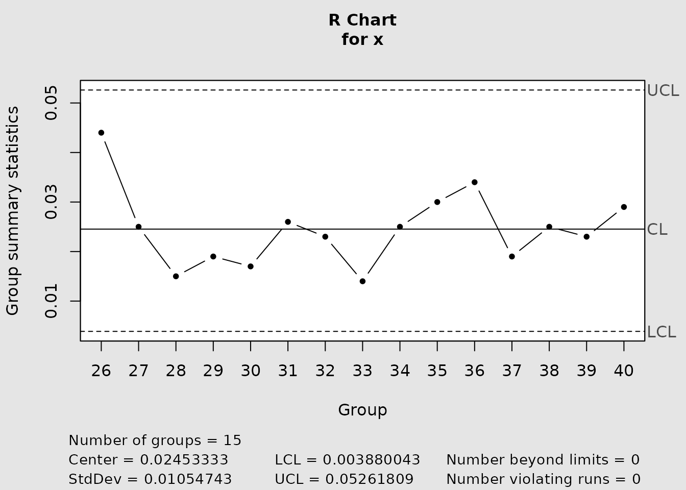
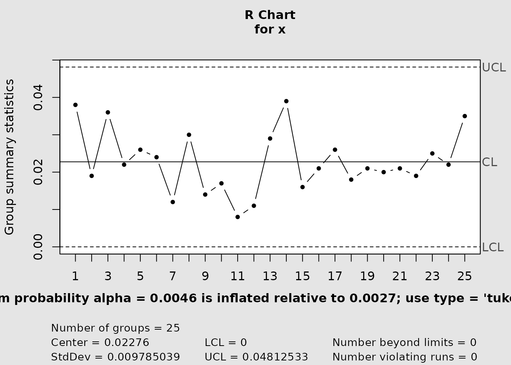
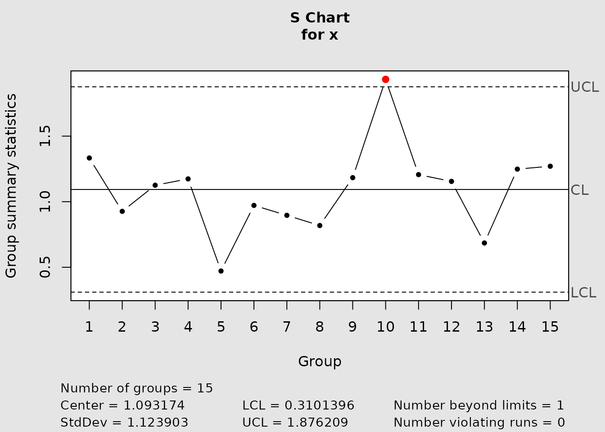
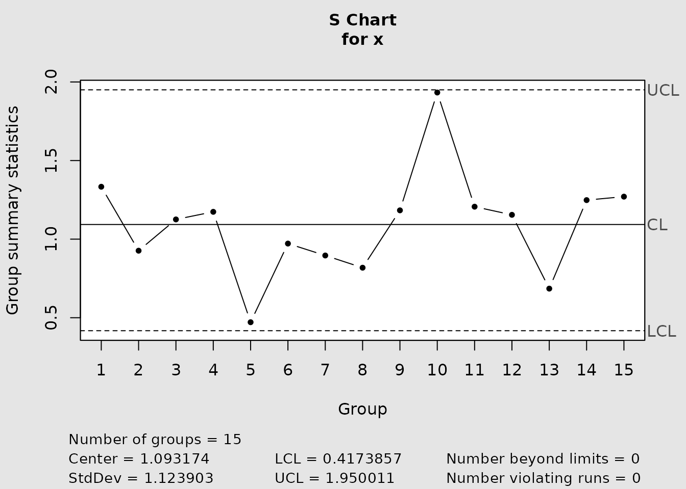

Monitoring univariate dispersion with R and S charts
Source:vignettes/univariate-dispersion-monitoring.Rmd
univariate-dispersion-monitoring.RmdChoosing a dispersion statistic
An R chart monitors each subgroup through its sample range
whereas an S chart monitors its sample standard deviation. The range is easy to obtain and remains useful for the small, fixed subgroup sizes common in routine process control. The standard deviation uses all observations and is generally preferable as subgroup size increases. Both charts assume independent subgroups from a stable process; the exact probability calculations below also assume normal observations within each subgroup.
The range and standard deviation are nonnegative and have skewed
sampling distributions at small sample sizes. A symmetric normal
approximation can therefore misplace one or both control limits. IQCC
exposes conventional and distribution-based versions through
cchart.R() and cchart.S().
The relative range
For a normal process with standard deviation , Barbosa, Gneri, and Meneguetti (2013) define the relative range
Its distribution function can be evaluated with the Tukey studentized-range distribution at infinite denominator degrees of freedom:
Consequently, stats::ptukey(w, nmeans = n, df = Inf)
evaluates
,
and stats::qtukey(p, nmeans = n, df = Inf) obtains its
quantile. The IQCC functions d2(n) and d3(n)
calculate the mean and standard deviation of
,
respectively.
sizes <- c(2, 5, 10, 15)
data.frame(
n = sizes,
d2 = d2(sizes),
d3 = d3(sizes)
)
#> n d2 d3
#> 1 2 1.128379 0.8525025
#> 2 5 2.325929 0.8640819
#> 3 10 3.077505 0.7970507
#> 4 15 3.471827 0.7562114Classical and exact R limits
The conventional three-sigma limits are
For nominal two-sided false-alarm probability , equal-tail exact probability limits are
cchart.R(type = "tukey") uses
,
so its probabilities are 0.00135 and 0.99865. The scale estimate is
obtained from the Phase I reference subgroups supplied as
y; the subgroups in x are then plotted as
Phase II. The chart signals below the lower limit or above the upper
limit.
Reproducing Table 2
Table 2 of Barbosa et al. (2013) prints quantiles to five decimal places. The following calculation reproduces small, intermediate, and large rows directly from the stated Tukey relationship.
table2 <- data.frame(
n = c(2, 5, 10),
published_q_001 = c(0.00177, 0.36739, 1.08458),
published_q_99865 = c(4.53274, 5.37740, 5.87416)
)
table2$calculated_q_001 <- stats::qtukey(
0.001,
nmeans = table2$n,
df = Inf
)
table2$calculated_q_99865 <- stats::qtukey(
0.99865,
nmeans = table2$n,
df = Inf
)
table2$error_q_001 <- table2$calculated_q_001 - table2$published_q_001
table2$error_q_99865 <-
table2$calculated_q_99865 - table2$published_q_99865
table2
#> n published_q_001 published_q_99865 calculated_q_001 calculated_q_99865
#> 1 2 0.00177 4.53274 0.001772454 4.532743
#> 2 5 0.36739 5.37740 0.367392008 5.377402
#> 3 10 1.08458 5.87416 1.084582650 5.874158
#> error_q_001 error_q_99865
#> 1 2.454321e-06 2.812733e-06
#> 2 2.007667e-06 2.381641e-06
#> 3 2.650150e-06 -2.498414e-06All discrepancies are below , half a unit at the fifth decimal place. The package’s tabular helper produces the same quantiles for a chosen nominal alpha.
table.qtukey(alpha = 0.0027, n = 5)
#> alpha/2 alpha 1-alpha 1-alpha/2
#> 2 0.002392814 0.004785635 4.242608 4.532743
#> 3 0.070003631 0.099034660 4.678703 4.950175
#> 4 0.220551642 0.278377858 4.938456 5.199657
#> 5 0.396528087 0.473383768 5.123140 5.377402False-alarm risk and subgroup size
For the classical limits, the actual in-control risk is
alpha.risk() performs this exact evaluation. It does not
report a nominal design value; it reports the probability induced by the
conventional limits.
risk <- alpha.risk(sizes)
data.frame(
n = sizes,
nominal_alpha = 0.0027,
actual_alpha = risk,
inflation = risk / 0.0027,
in_control_arl = 1 / risk
)
#> n nominal_alpha actual_alpha inflation in_control_arl
#> 1 2 0.0027 0.009152215 3.389709 109.2632
#> 2 5 0.0027 0.004603048 1.704833 217.2473
#> 3 10 0.0027 0.004367441 1.617571 228.9670
#> 4 15 0.0027 0.004493839 1.664385 222.5269The inflation is most severe for the smallest subgroups and remains material over this range of . Exact probability limits instead allocate the chosen tail probabilities by construction, conditional on the process scale used to form them.
Phase I and Phase II with an R chart
Phase I reference data establish the process scale and the fixed
limits. Phase II data are prospective subgroups evaluated against that
design. The exact IQCC wrapper makes this split explicit through
y and x for the limits.
data(pistonrings)
phase1 <- pistonrings[1:25, ]
phase2 <- pistonrings[26:40, ]
r_chart <- cchart.R(
x = phase2,
n = 5,
type = "tukey",
y = phase1
)
r_chart$limits
#> LCL UCL
#> 0.003880043 0.05261809
r_chart$statistics
#> 26 27 28 29 30 31 32 33 34 35 36 37 38
#> 0.044 0.025 0.015 0.019 0.017 0.026 0.023 0.014 0.025 0.030 0.034 0.019 0.025
#> 39 40
#> 0.023 0.029The returned qcc object’s center line is still the mean
range calculated from x, not the Phase I expected range
based on y. Thus the current wrapper freezes the Phase I
scale for its limits but does not freeze every displayed design
quantity. This distinction does not change the limit-crossing signals,
but it matters when interpreting the center line.
The conventional wrapper delegates scale estimation and limits to
qcc using the supplied x. It is appropriate
for a retrospective chart of a stable reference data set, but its
interface does not accept a separate Phase I scale for prospective Phase
II monitoring.
r_chart_classical <- cchart.R(
x = phase1,
n = 5,
type = "norm"
)
r_chart_classical$limits
#> LCL UCL
#> 0 0.04812533S charts
For normal samples,
This gives equal-tail probability limits
cchart.S(type = "n") requests the normalized
qcc chart, while cchart.S(type = "e", m = n)
uses the chi-square formula with
.
In the current interface, both variants estimate the scale from
x; there is no separate Phase I/Phase II argument.
For comparison, the three-sigma construction underlying a classical S chart uses and . With a process-scale estimate , its limits have the form
As with R, these moment-based limits are not equal-tail probability limits for small .

s_chart_exact <- cchart.S(softdrink, type = "e", m = 10)
rbind(
normalized = s_chart_normalized$limits,
exact = s_chart_exact$limits
)
#> LCL UCL
#> 0.3101396 1.876209
#> 0.4173857 1.950011Interpretation and limitations
A point above the upper limit indicates increased within-subgroup dispersion; a point below a positive lower limit indicates decreased dispersion. A signal is evidence against the in-control model, not a diagnosis of its cause. Check data quality, rational subgrouping, independence, and process context before acting on it.
The exact calibration relies on normal within-subgroup observations
and a fixed known scale. Operational charts replace that scale by a
Phase I estimate. Their limits are therefore plug-in limits and do not
account for additional uncertainty from estimating
,
especially when the number of reference subgroups is small. The current
R and S graphical wrappers also do not expose all displayed limits
through dedicated pure numerical limit functions; use the returned
qcc object’s limits component when auditing a
fitted chart.
References
Barbosa, E. P., Gneri, M. A., and Meneguetti, A. (2013). Range control charts revisited: Simpler Tippett-like formulae, its practical implementation, and the study of false alarm. Communications in Statistics - Simulation and Computation, 42(2), 247–262. doi: 10.1080/03610918.2011.639967.
Montgomery, D. C. (2009). Introduction to Statistical Quality Control, 6th ed. Wiley.
cat("<!-- IQCC_EXECUTED_UNIVARIATE_DISPERSION -->\n")